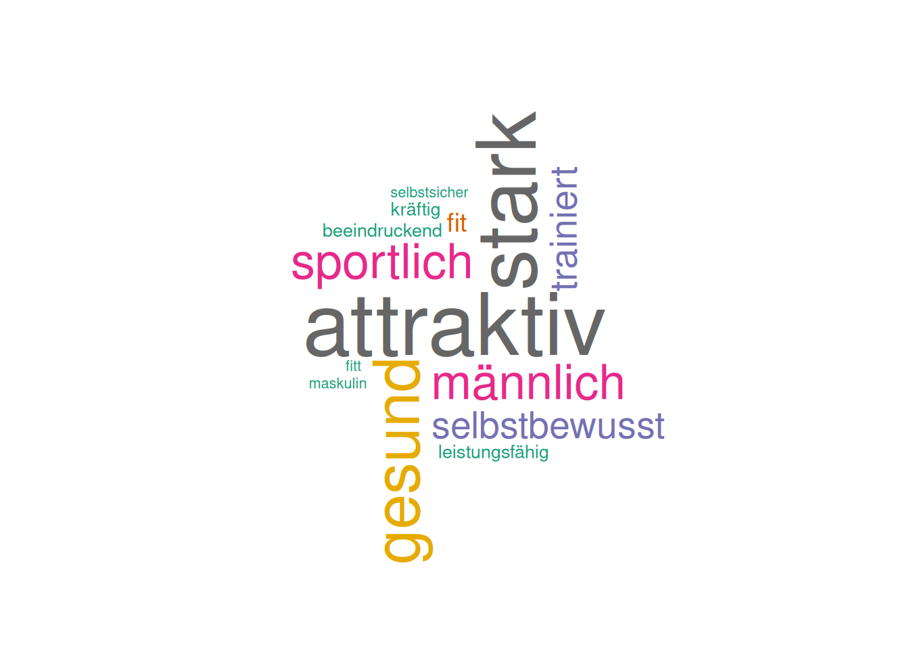
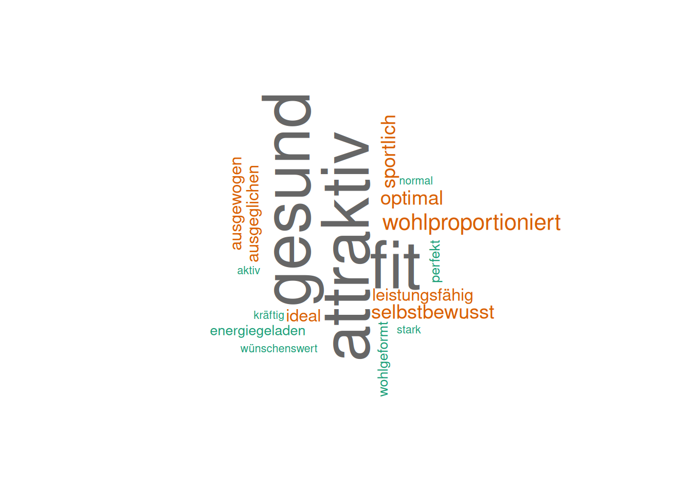
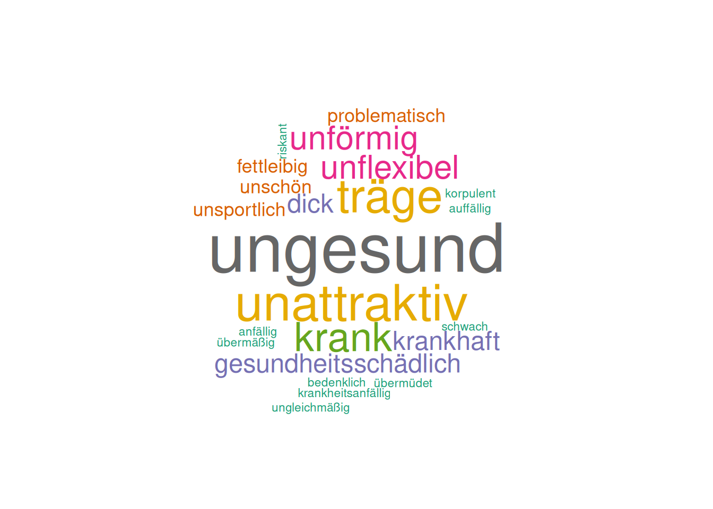
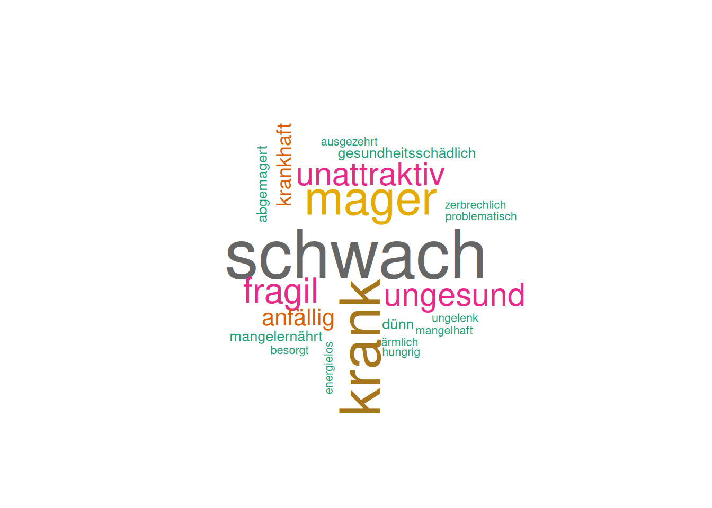
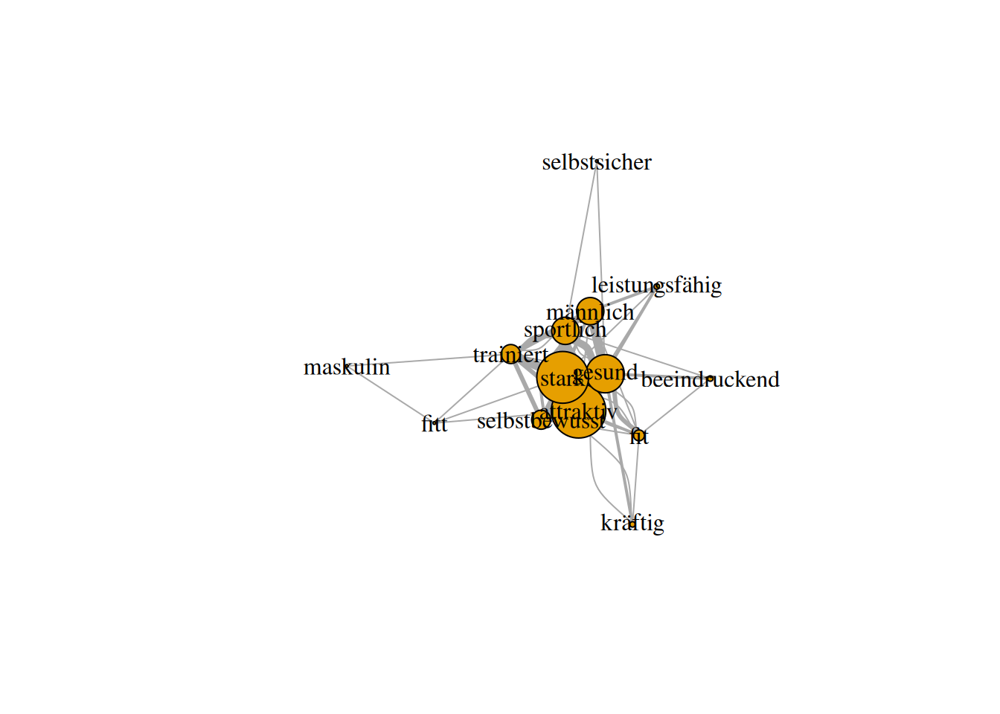
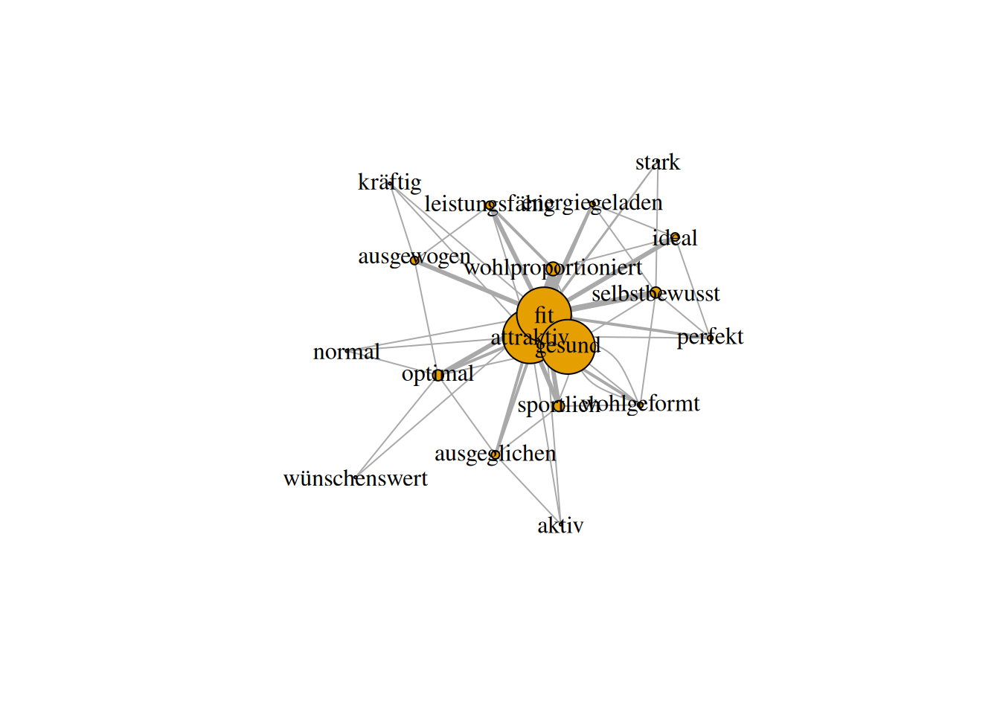
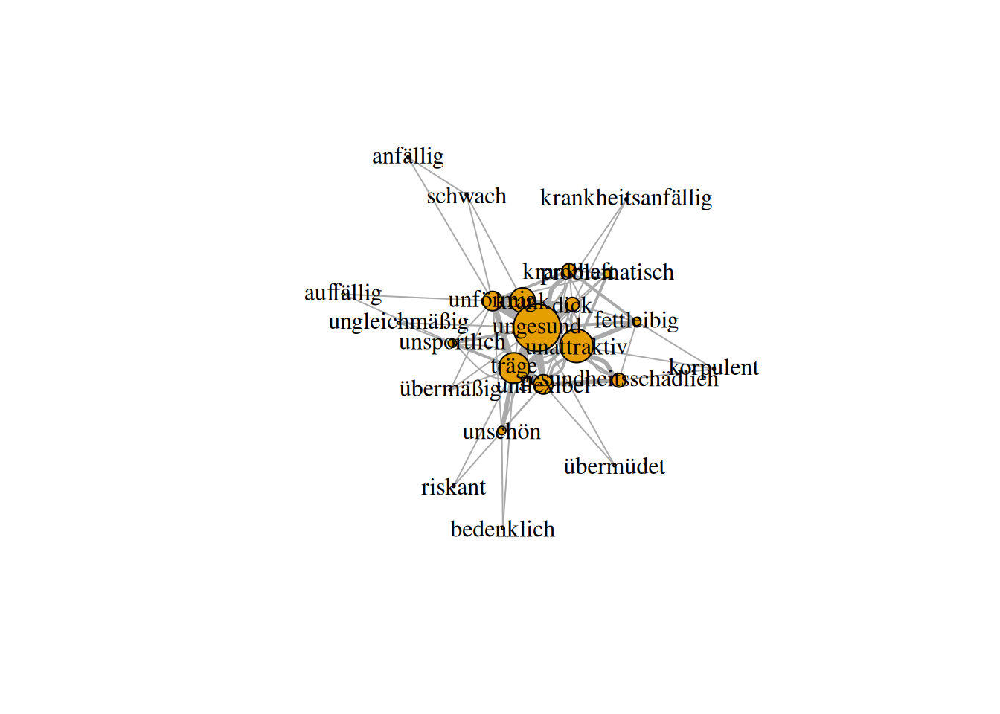
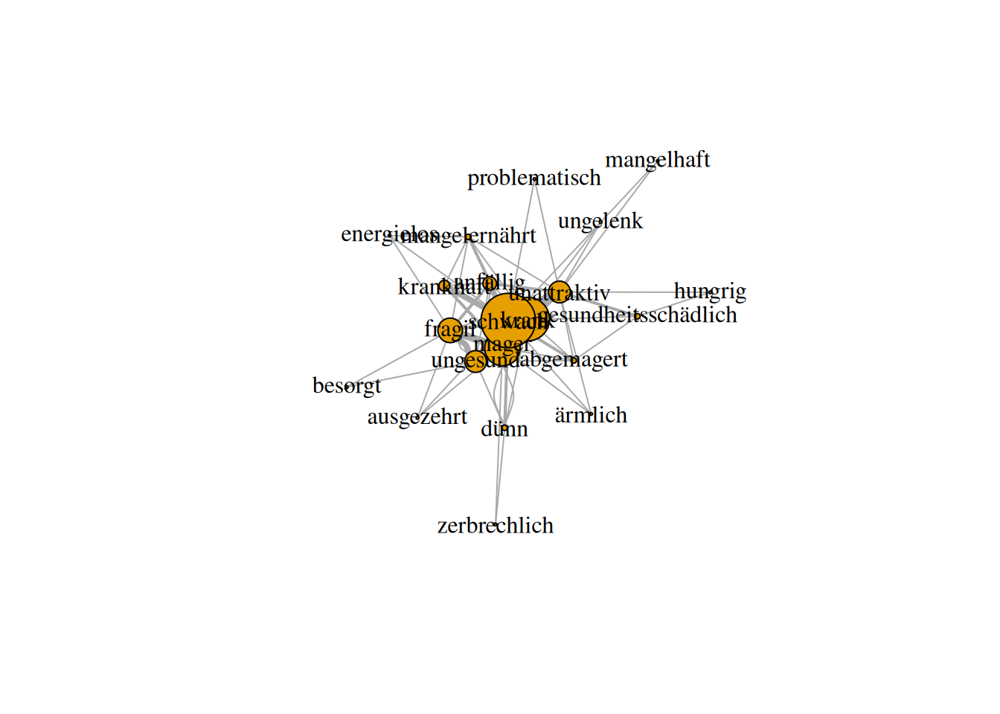

## global variables:
# only if necessary to limit running timeanalyze word associations - first order
Notes
load needed pre-processed data
# sets the directory of location of this script as the current directory
# setwd(dirname(rstudioapi::getSourceEditorContext()$path))
# load packages
require(pacman)
p_load('DT', 'igraph', 'tidyverse', 'wordcloud', 'readxl')
# load data
setwd("../generated data")
# for first order associations example
associationData_firstOrder <- read_excel(path = "word_associations_firstOrder_adjectives.xlsx", sheet = 1)
## adjust ID variable
associationData_firstOrder$participant_id <- str_extract(string = associationData_firstOrder$participant_id, pattern = "[:alpha:]*_[:digit:]*")first order associations
describe data
dim(associationData_firstOrder)[1] 400 6table(associationData_firstOrder$cue)
muskulös normalgewichtig übergewichtig untergewichtig
100 100 100 100 length(unique(associationData_firstOrder$participant_id))[1] 20dynamic data table:
DT::datatable(data = associationData_firstOrder)analyze data
get word clouds
function to create word clouds:
generate_wordcloud <- function(cue_word, data_set) {
# Filter the data set for the given cue word
tmp <- data_set[data_set$cue == cue_word, ]
# Calculate word frequencies
word_frequencies <- table(tmp$response)
word_frequencies_df <- as.data.frame(word_frequencies)
# Create the word cloud
wordcloud(words = word_frequencies_df$Var1,
freq = word_frequencies_df$Freq,
min.freq = 1,
max.words = 100,
random.order = FALSE,
colors = brewer.pal(8, "Dark2"))
}generate_wordcloud("muskulös", associationData_firstOrder)
generate_wordcloud("normalgewichtig", associationData_firstOrder)
generate_wordcloud("übergewichtig", associationData_firstOrder)
generate_wordcloud("untergewichtig", associationData_firstOrder)
get semantic networks
The idea of Network Inference from Fluency Data is motivated by two articles:
- Wulff, D. U., Hills, T. T., & Mata, R. (2022). Structural differences in the semantic networks of younger and older adults. Scientific Reports, 12(1), Article 1. https://doi.org/10.1038/s41598-022-11698-4
- Goñi, J., Arrondo, G., Sepulcre, J., Martincorena, I., Vélez de Mendizábal, N., Corominas-Murtra, B., Bejarano, B., Ardanza-Trevijano, S., Peraita, H., Wall, D. P., & Villoslada, P. (2011). The semantic organization of the animal category: Evidence from semantic verbal fluency and network theory. Cognitive Processing, 12(2), 183–196. https://doi.org/10.1007/s10339-010-0372-x
function to create semantic networks (! without checking if all the edges are “true”, appear more frequently than expected randomly):
# Function to create edges from the grouped responses
create_edges <- function(association, distance = 2) {
edges <- data.frame()
n <- length(association)
for (i in 1:n) {
for (d in 1:distance) {
if (i + d <= n) {
edges <- rbind(edges, data.frame(from = association[i], to = association[i + d]))
}
}
}
return(edges)
}
generate_association_network <- function(cue_word, data_set, distance = 2) {
# Filter the dataset based on the cue word
tmp <- data_set[data_set$cue == cue_word, ]
# print number of times a response was given:
print("number of times a response was given")
print(sort(table(tmp$response)))
grouped_responses <- tmp %>%
group_by(participant_id) %>%
summarise(associations = list(response)) %>%
ungroup()
# Apply the function to create edges for each participant
all_edges <- do.call(rbind, lapply(grouped_responses$associations, create_edges, distance = distance))
# Calculate word frequencies across the entire data set
word_frequencies <- tmp %>%
count(response, name = "frequency")
# Calculate the edge weights (how often each link appears between two words)
edge_weights <- all_edges %>%
group_by(from, to) %>%
summarise(weight = n(), .groups = "drop")
# Create the graph from the edge list with edge weights
g <- graph_from_data_frame(edge_weights, directed = FALSE)
# Get the list of unique words in the graph (vertices)
vertices <- V(g)$name
# Extract edge weights to adjust the edge widths
edge_widths <- E(g)$weight
# Map word frequencies to vertex sizes
vertex_sizes <- sapply(vertices, function(word) {
freq <- word_frequencies %>%
filter(response == word) %>%
pull(frequency)
if(length(freq) == 0) {
return(1) # Default size if the word is not found (shouldn't happen)
} else {
return(freq)
}
})
# Plot the network with vertex sizes proportional to word frequencies and edge widths proportional to edge weights
plot(g,
vertex.label.color = "black",
vertex.size = vertex_sizes * 1.5, # Scale vertex sizes by word frequency
edge.width = edge_widths * 1, # Scale edge widths by weight (number of links)
edge.arrow.size = 0.5)
# Return the igraph object
return(g)
}tmp_g <- generate_association_network("muskulös", associationData_firstOrder, distance = 2)[1] "number of times a response was given"
fitt maskulin selbstsicher beeindruckend kräftig
1 1 1 2 2
leistungsfähig fit selbstbewusst trainiert männlich
2 4 7 7 10
sportlich gesund stark attraktiv
10 14 19 20 
mat <- as.matrix(as_adjacency_matrix(tmp_g, attr = "weight"))
define_threshold <- 10
mat[apply(mat, 1, function(row) any(row >= define_threshold)), apply(mat, 2, function(row) any(row >= define_threshold))] attraktiv gesund stark
attraktiv 0 12 19
gesund 12 0 12
stark 19 12 0tmp_g <- generate_association_network("normalgewichtig", associationData_firstOrder, distance = 2)[1] "number of times a response was given"
aktiv kräftig normal stark
1 1 1 1
wünschenswert energiegeladen perfekt wohlgeformt
1 2 2 2
ausgeglichen ausgewogen ideal leistungsfähig
3 3 3 3
optimal selbstbewusst sportlich wohlproportioniert
4 4 4 5
attraktiv fit gesund
20 20 20 
mat <- as.matrix(as_adjacency_matrix(tmp_g, attr = "weight"))
define_threshold <- 10
mat[apply(mat, 1, function(row) any(row >= define_threshold)), apply(mat, 2, function(row) any(row >= define_threshold))] attraktiv fit gesund
attraktiv 0 20 20
fit 20 0 17
gesund 20 17 0tmp_g <- generate_association_network("übergewichtig", associationData_firstOrder, distance = 2)[1] "number of times a response was given"
anfällig auffällig bedenklich
1 1 1
korpulent krankheitsanfällig riskant
1 1 1
schwach übermäßig übermüdet
1 1 1
ungleichmäßig fettleibig problematisch
1 3 3
unschön unsportlich dick
3 3 5
gesundheitsschädlich krankhaft unflexibel
5 5 7
unförmig krank träge
7 9 11
unattraktiv ungesund
12 17 
mat <- as.matrix(as_adjacency_matrix(tmp_g, attr = "weight"))
define_threshold <- 6
mat[apply(mat, 1, function(row) any(row >= define_threshold)), apply(mat, 2, function(row) any(row >= define_threshold))] krank träge unflexibel unförmig ungesund
krank 0 1 2 4 9
träge 1 0 6 4 6
unflexibel 2 6 0 0 4
unförmig 4 4 0 0 7
ungesund 9 6 4 7 0tmp_g <- generate_association_network("untergewichtig", associationData_firstOrder, distance = 2)[1] "number of times a response was given"
ärmlich ausgezehrt besorgt
1 1 1
energielos hungrig mangelhaft
1 1 1
problematisch ungelenk zerbrechlich
1 1 1
abgemagert dünn gesundheitsschädlich
2 2 2
mangelernährt krankhaft anfällig
2 4 5
unattraktiv ungesund fragil
8 8 9
mager krank schwach
13 16 20 
mat <- as.matrix(as_adjacency_matrix(tmp_g, attr = "weight"))
define_threshold <- 6
mat[apply(mat, 1, function(row) any(row >= define_threshold)), apply(mat, 2, function(row) any(row >= define_threshold))] krank mager schwach unattraktiv ungesund
krank 0 7 16 3 2
mager 7 0 12 3 6
schwach 16 12 0 7 6
unattraktiv 3 3 7 0 1
ungesund 2 6 6 1 0